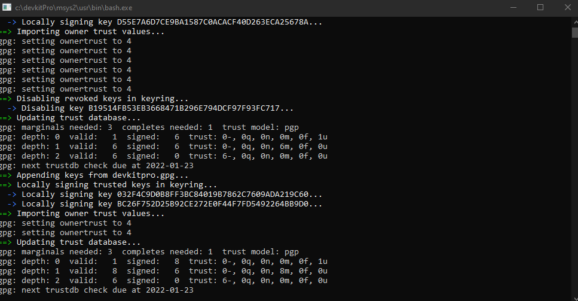

Prerequisites
devkitPro
Usenti
Any text editor
Simple or Simple-DE source code
A lot of patience
Step 1: Installing devkitPro
Installation
Installing devkitPro will give you access to a suite of tools such as GCC that will allow you to compile the source code of the kernel into a functioning binary that can be applied to your flashcart.
First, go to the devkitPro releases page and download the "devkitProUpdater-3.0.3.exe" executable.
Once you run it (and satisfy Windows UAC), you will be greeted with a screen that looks something like this:
Click next, and select "Download and install/install from downloaded files," then, hit next again.
The "Keep downloaded files after install?" option is your choice. I would recommend removing the downloaded files to save space.
Coming up next, we will see a screen that looks like this:
Here, you'll notice that I have unchecked everything except for "GBA Development."
We are only concerned about the Game Boy Advance here, but if you want to enable things like GameCube or 3DS development, go ahead.
Up next, you'll be asked where you want to put the devkitPro installation.

I always opt for "C:\devkitPro" but you can put it wherever you want, but make a note of where you put it, it's important.
Create a Start Menu folder named "devkitPro" and hit "Install."
And now, watch as it does its magic.
After it's completed, hit next, and you'll be asked if you want to donate to devkitPro.
...please do!
Step 2: Cloning the Source Code
Without a copy of the source code for the kernel we want, we can't really do anything.
If your cartridge is the base model, look here.
If your cartridge is the Definitive Edition, look here.
The process for fetching the source code is the same between the two versions.
To actually download the source code in .ZIP format, you'll look here on the repository page:
Once you have it downloaded, extract it into the location of your choice, make sure that the path doesn't contain any spaces, otherwise compilation will flat-out not work.
In the folder, you'll notice a batch file titled "build.bat." Execute this batch file by double-clicking to do a test compile to make sure we set up devkitPro correctly.
If everything went well, we'll see a screen somewhat like this, along with a new folder and two new files in the directory.
Step 3: Editing the Data Files
Here comes the fun part.